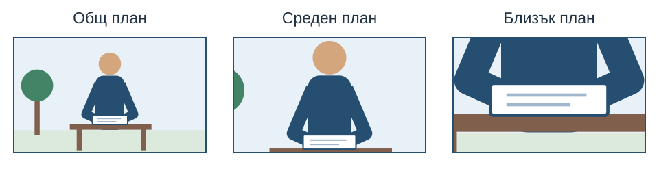

След урока ще можете да:
- избирате ориентация на телефона според предназначението на видеото;
- различавате общ, среден и близък план;
- поддържате стабилен кадър и изпълнявате просто плавно движение.
1. Първо решете къде ще се гледа видеото
Снимката показва един момент, а видеото представя действие във времето. За сайта на клуба можете да покажете подреждане на изложба, работа по предмет или подготовка за събитие.
Изберете ориентацията предварително. Хоризонталното видео е удобно за широк плейър на страница. Вертикалното може да е подходящо за съдържание, предназначено за вертикален телефонен екран. Не завъртайте телефона по средата на един запис.
За упражнението изберете една ориентация за цялата серия, съобразена с проекта ви. Използвайте еднакви настройки за размер и честота на кадрите, когато устройството позволява. Например 1080p при 30 кадъра в секунда е възможен учебен избор; само високата резолюция не поправя разтърсен или неясен запис.
2. Общ, среден и близък план
В задачата снимачен кадър означава непрекъснато заснет откъс. Едрината на плана показва каква част от обекта и средата се вижда.
- Общ план: показва мястото, участника и връзката му с обкръжението.
- Среден план: насочва вниманието към участника и извършваното действие.
- Близък план: показва важен детайл — ръце, предмет, изражение или отделна част от действието.

Например общият план показва залата за изложбата, средният — участник, който подрежда снимки, а близкият — поставянето на надпис под една снимка.
3. Композиция през цялото действие
Проверявайте не само началния изглед, а и къде ще се движи обектът. Оставете достатъчно пространство в посоката на действието и не отрязвайте важната част в края на движението.
- Използвайте ясен основен обект и подходящ фон.
- Проверете хоризонта и разсейващите предмети.
- Не закривайте обектива с пръсти.
- Уверете се, че важната част остава на фокус.
- При нужда променете позицията спрямо светлината, вместо да оставяте обекта неразличим.
Приложете наблюденията от уроци 28–29. Сега трябва да ги проследите и по време на целия запис.
4. Как да получите стабилен кадър
Започнете със статична камера. Дръжте телефона с две ръце, с прибрани към тялото лакти, или използвайте подходяща стабилна опора. Ако разполагате със стойка, проверете подредбата, преди да започнете.
Не всяко действие изисква движение на камерата. Човекът или предметът може да се движи в стабилно подреден кадър. Това често е по-ясно от постоянно следене с резки корекции.
След стартиране оставете кратко спокойно начало. След края на действието задръжте още няколко секунди, преди да спрете. Така по-късно ще имате място за изрязване при монтаж.
5. Плавно движение с ясна причина
Панорамното движение завърта камерата наляво или надясно от сравнително постоянна позиция. Движението нагоре и надолу променя вертикалната посока. Използвайте ги, когато искате да разкриете информация или да проследите действие.
- Изберете началния и крайния кадър.
- Пробвайте движението преди записа.
- Започнете с кратко задържане.
- Движете се бавно и равномерно, без случайно връщане назад.
- Задръжте и крайния кадър, преди да спрете.
За тази задача не използвайте постоянно приближаване с цифрово увеличение. Сравнете го с промяна на позицията между два отделни записа. Ако движението затруднява гледането, повторете по-просто или снимайте статично.
6. Практическа задача: пет кратки записа
Изберете проста дейност, например подреждане на фотография, отваряне на книга или изработване на детайл. За хората в кадър съобразете заснемането и бъдещото споделяне с тяхното съгласие.
- Заснемете общ, среден и близък план на дейността — три отделни записа от приблизително 8–12 секунди.
- Заснемете четвърти откъс със статична камера и движение на обекта.
- Заснемете пети с едно бавно хоризонтално или вертикално движение на камерата.
- Прегледайте всички записи на по-голям екран, ако е възможно. Потърсете разтърсване, неясен обект, неподходящ фон или загубен детайл.
- Повторете един проблемен запис и посочете какво сте променили.
Запазете ясни имена, например 32-wide, 32-medium и 32-close, като оставите действителното разширение на видеото. Не е необходимо да монтирате откъсите в този урок.
Резултат: пет подбрани кратки записа и бележка за повторно заснетия. Ще ги използвате при следващите задачи по планиране и монтаж на видео.
7. Самопроверка
Задължително ли е камерата да се движи, за да има действие?
Не. Движението на обекта може да се представи със статична камера.
Защо снимаме различни планове?
Общият показва контекста, средният — действието, а близкият — важния детайл.
Защо оставяме време преди и след действието?
За да има възможност за удобно изрязване и свързване на откъсите при по-късен монтаж.
Какво определя ориентацията?
Предназначението и мястото, където ще се гледа видеото. Изборът трябва да е последователен в рамките на серията.
Прочетете още
Nikon — основи на видеозаснемането; Nikon — стабилно видео (на английски). За композицията използвайте и урок 28.